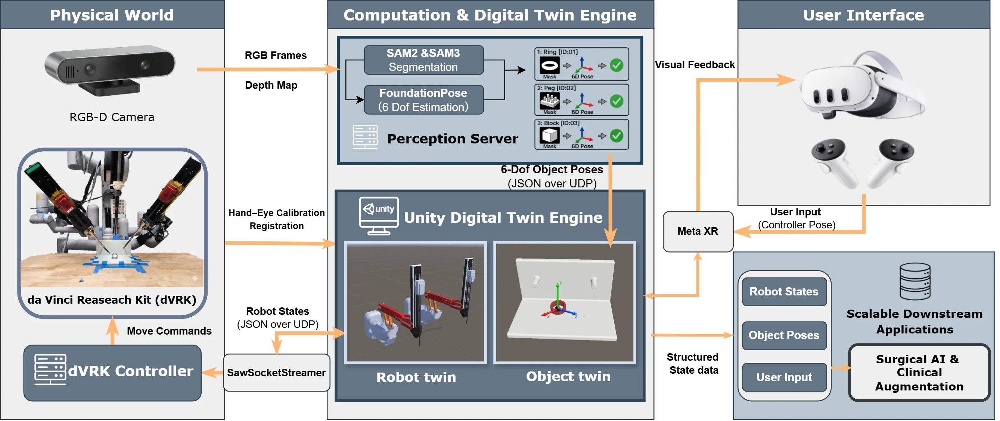

robotics / RESEARCH PROJECT
Digital-twin VR teleoperation for surgical robots
Accepted · IEEE/RSJ International Conference on Intelligent Robots and Systems (IROS), 2026
About this project
I co-developed a dVRK teleoperation system connecting ROS and Unity, markerless object tracking, and multiple views of a shared digital twin. I also contributed to VR control, user experiments, and analysis.
Workflow
- Markerless scene tracking
- ROS–Unity digital twin
- Multi-view VR control
System overview

Project demonstration
VR teleoperation · research demonstration